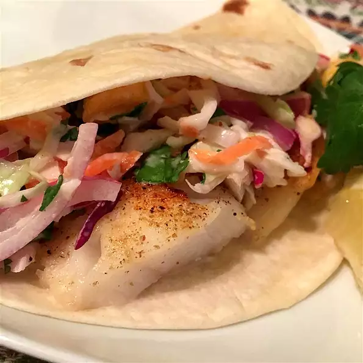

Fish tacos

Description
Easy Fish Tacos with Mango-Pineapple Slaw
Delicious easy to make fish tacos for the whole family!
Ingredients
- 1 pound cod fillets
- 1 tablespoon lemon juice
- salt and ground black pepper to taste
- ½ cup red wine vinegar
- ¼ cup reduced-fat mayonnaise
- 1 tablespoon white sugar
- 1 tablespoon salt
- 1 tablespoon ground black pepper
- 1 teaspoon garlic powder
- 3 cups shredded cabbage
- ½ cup chopped fresh mango
- ½ cup chopped fresh pineapple
- ½ cup chopped red onion
- ¼ cup chopped fresh cilantro
- 1 fresh jalapeno pepper, chopped
- 8 (8 inch) flour tortillas
Steps
- Preheat the oven to 375 degrees F (190 degrees C).
- Place cod fillets on a large sheet of aluminum foil; pour lemon juice over fish and
season with salt and black pepper to taste. Fold the foil around the fish and seal to
create a pouch; place pouch in a baking dish.
- Bake in the preheated oven until the fish flakes easily with a fork, about 20 minutes.
- Meanwhile, whisk vinegar, mayonnaise, sugar, 1 tablespoon salt, 1 tablespoon black pepper,
and garlic powder in a bowl until smooth. Combine cabbage, mango, pineapple, red onion,
cilantro, and jalapeno in large bowl. Pour dressing over vegetables and fruit; toss to
combine. Cover and refrigerate slaw until ready to serve.
- Divide fish evenly among flour tortillas. Spoon slaw over fish to serve.